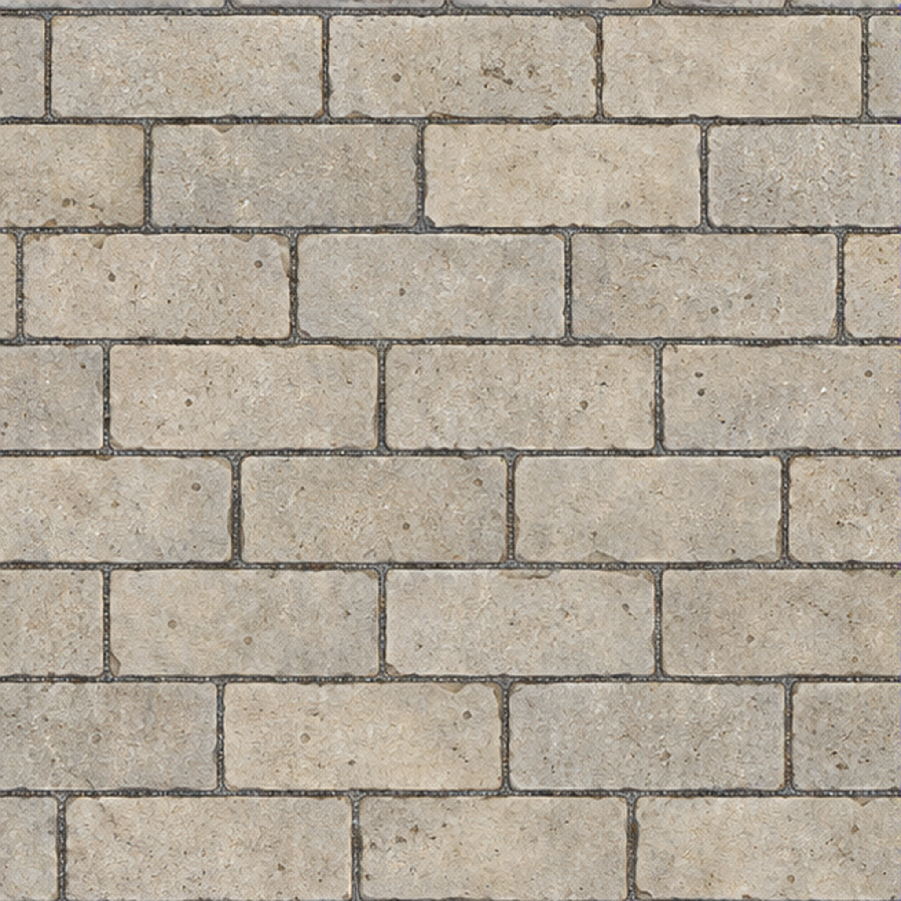
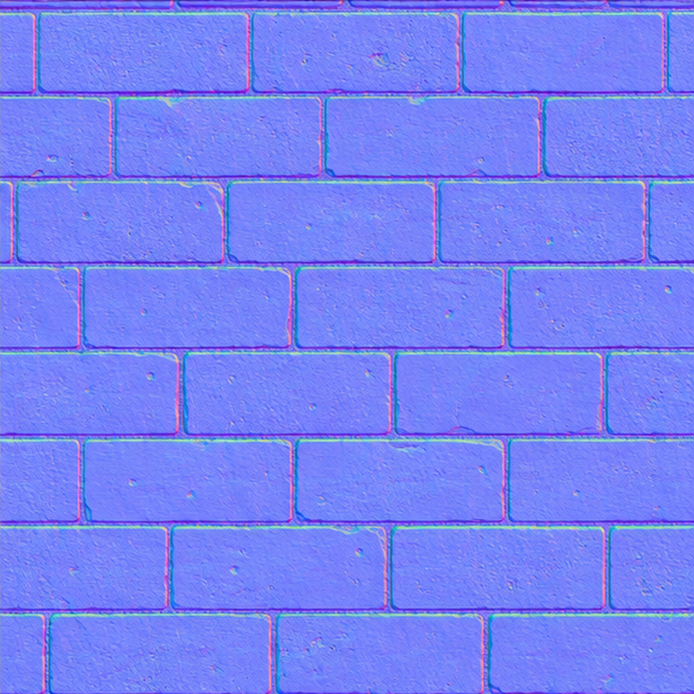
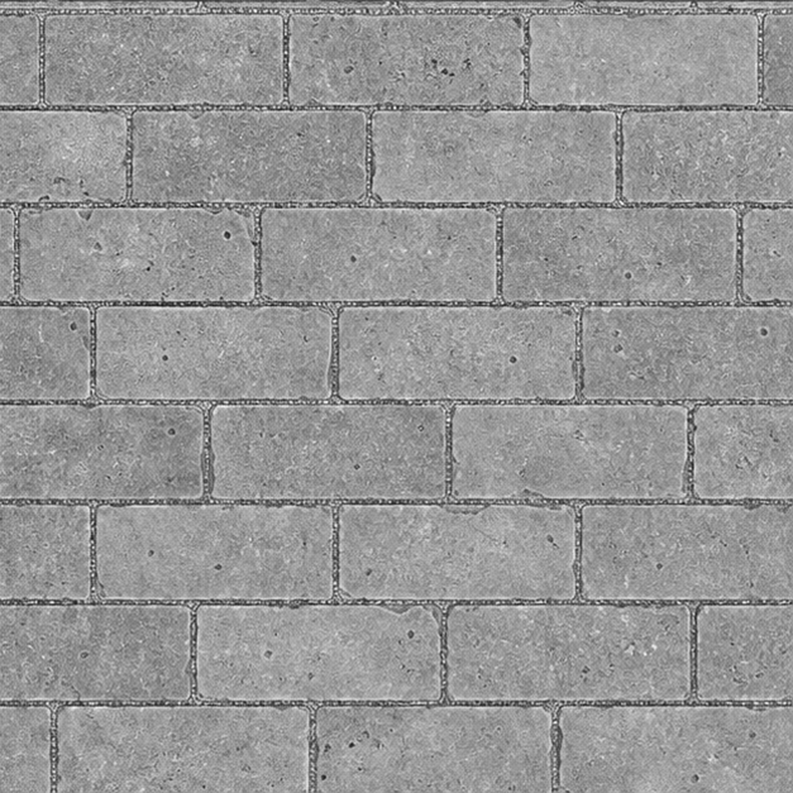
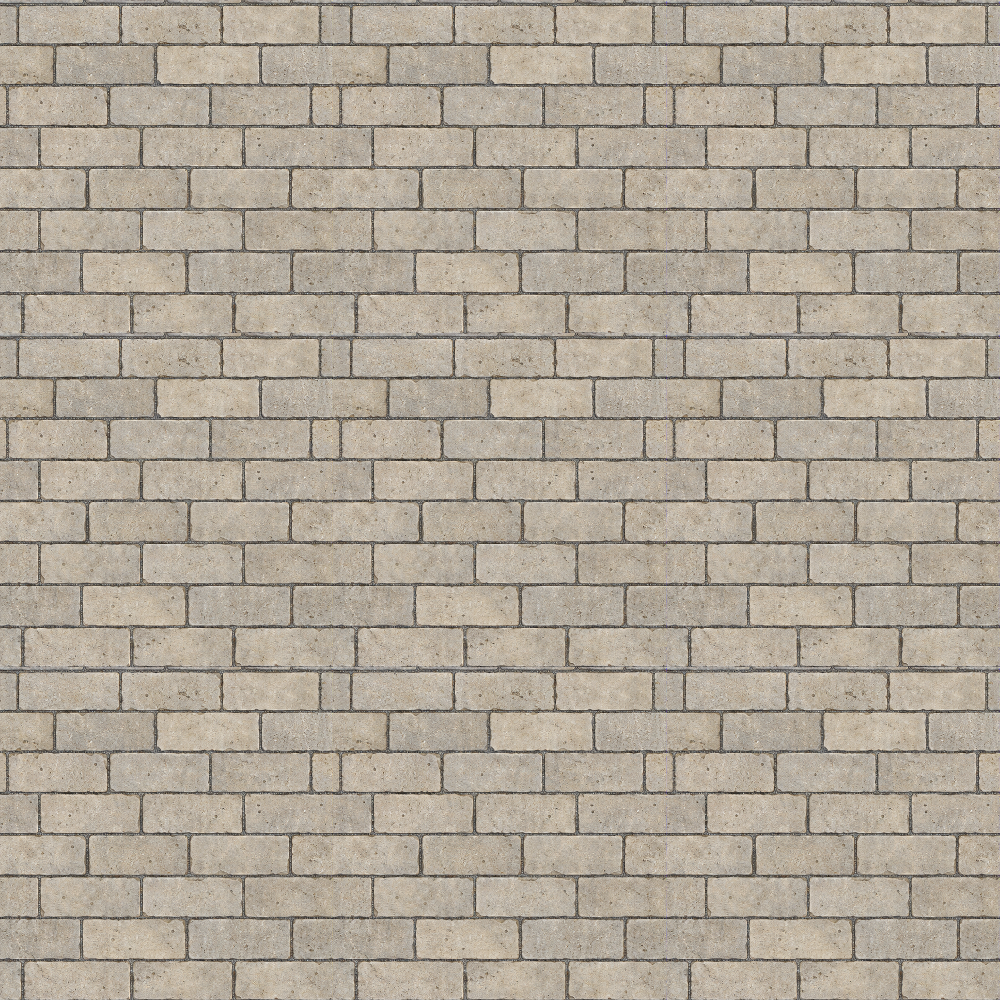

Värikartta

Saumattomuus-QA ei läpäissyt. Erityisesti korkeuskartan toistoraja katkeaa. PT:n hyväksyntä ja peliin kytkentä avoinna.
Native-paneleissa 627 × 627 / 8-bit data; toimituskartat 2048 × 2048. Korkeus on 16-bit PNG, mutta sisältää vain 226 eri arvoa 8-bittisestä lähteestä.



